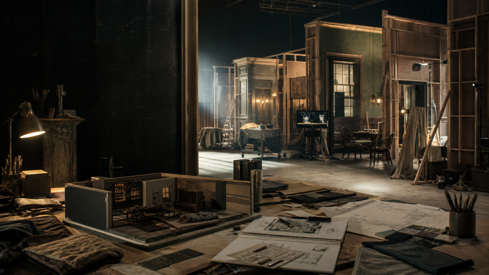

简介
再野文化工作室由美术设计蔡再田主理，作品涉及电影、网大、剧集、综艺、舞台、 宣传片和实景项目。页面以项目经历和美术资料为索引，便于快速了解可合作的方向。
Prompt Vault 是另一个独立入口：它是浏览器里的提示词管理工具，用来收集、整理、 筛选、备份和快速插入 Prompt，不作为美术作品集的主线。
作品选集
作品
《爱情公寓》《倩女幽魂》等项目图
《一宅家族》《苏记棺材铺》等空间与平面
《乘风破浪的姐姐》《青春在大地》等舞台视觉
民国实景空间与搭建过程
广告分镜、戏用文件与手写道具
这个分类下暂时没有展示项
服务范围
从参考、图纸到现场执行
电影 / 网大
气氛图、场景概念、特效设计、道具资产、角色三视图与分镜。
剧集 / 短剧 / 情景剧
陈设图、置景模型、戏用平面、生活痕迹和镜头内细节。
综艺 / 舞台 / 实景
棚内空间、舞台视觉、实景搭建、施工级模型与现场沟通。
提示词工作流
用 Prompt Vault 管理提示词、项目、场景、类型、标签和备份文件。
Prompt Vault
浏览器里的提示词管理工具
Prompt Vault 用来收集、整理、预览、同步、导入导出并快速插入 Prompt。 它更像一个放在浏览器里的素材柜，而不是生成工具。
项目
按正在做的项目归档提示词，方便在不同片子和场景之间切换
类型 / 标签
画面描述、约束模块、负面提示词可以分开保存和筛选
备份
支持导入导出 JSON，也可以只导出当前筛选结果
关于
再野文化工作室面向影视、舞台、综艺和视觉项目
代表项目包括《爱情公寓》《美猴王·一念齐天》《倩女幽魂》《地心危机》《迷航昆仑墟》 《一宅家族》《乘风破浪的姐姐第一季》等。更多作品图可按项目类型或资料类型继续整理。